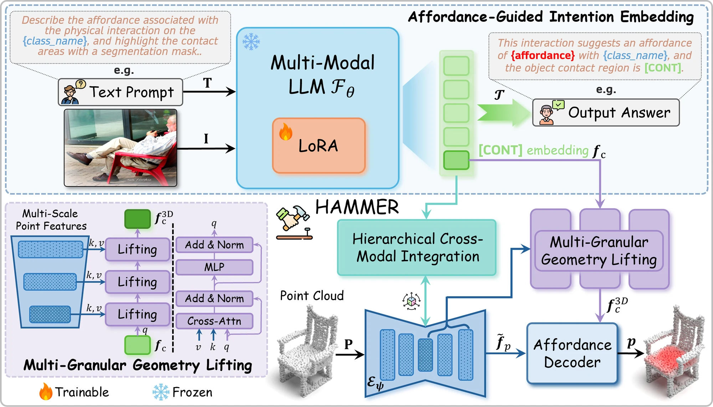

Harnessing MLLMs via Cross-Modal Integration for Intention-Driven 3D Affordance Grounding
1The Hong Kong Polytechnic University · 2Huazhong University of Science and Technology
HAMMER reads the interaction intention out of a single image into a contact-aware embedding, has an MLLM name the affordance, and folds that knowledge into the point cloud through hierarchical cross-modal integration and multi-granular geometry lifting.
Humans commonly identify 3D object affordance through observed interactions in images or videos, and once formed, such knowledge can be generically generalized to novel objects. Inspired by this principle, we advocate for a novel framework that leverages emerging multimodal large language models (MLLMs) for interaction intention-driven 3D affordance grounding, namely HAMMER.
Instead of generating explicit object attribute descriptions or relying on off-the-shelf 2D segmenters, we alternatively aggregate the interaction intention depicted in the image into a contact-aware embedding and guide the model to infer textual affordance labels, ensuring it thoroughly excavates object semantics and contextual cues.
We further devise a hierarchical cross-modal integration mechanism to fully exploit the complementary information from the MLLM for 3D representation refinement, and introduce a multi-granular geometry lifting module that infuses spatial characteristics into the extracted intention embedding, thus facilitating accurate 3D affordance localization.
Extensive experiments on public datasets and our newly constructed corrupted benchmark demonstrate the superiority and robustness of HAMMER compared to existing approaches. All code and weights are publicly available.

[CONT] token collects the interaction into 𝐟c
while the model also names the affordance in words. That knowledge enters the point cloud
through hierarchical cross-modal integration, and the embedding is given geometry back by
multi-granular lifting before the affordance decoder produces the map.A vocabulary token [CONT] is added purely to collect interaction-related
information; its hidden state becomes the contact-aware embedding
𝐟c. Naming the affordance in words is kept as an auxiliary task,
which is what forces the token to carry the interaction.
MLLM hidden states meet the point cloud twice — once at the encoder bottleneck through cross-attention, and again at full resolution through a gated global descriptor. One fusion at the end would have skipped the contextual half.
𝐟c came from an image, so it knows the intention but not the
shape. It walks the decoder's scales from coarse to fine, querying point features at
each one. No camera parameters and no intermediate 2D contact map.
Enhanced point features attend to the 3D-aware embedding, and an MLP with a sigmoid turns the result into a score per point. Training adds the language loss to a focal-plus-dice affordance loss.
Fig. 01 · PIAD — seen categories
Fig. 02 · PIAD — unseen categories
Fig. 03 · PIAD-v2
Fig. 04 · the feature field behind the prediction
Fig. 05 · one chair, seven corruptions
aIOU, AUC and SIM higher is better; MAE lower is better.
| Seen | Unseen | ||||||||
|---|---|---|---|---|---|---|---|---|---|
| Method | Venue | aIOU ↑ | AUC ↑ | SIM ↑ | MAE ↓ | aIOU ↑ | AUC ↑ | SIM ↑ | MAE ↓ |
| Intention-driven 3D affordance grounding | |||||||||
| PMF | ICCV 21 | 10.13 | 75.05 | 0.425 | 0.141 | 4.67 | 60.25 | 0.330 | 0.211 |
| ILN | SIGGRAPH 22 | 11.25 | 75.84 | 0.427 | 0.137 | 4.71 | 59.69 | 0.325 | 0.207 |
| FRCNN | Remote Sensing 23 | 11.97 | 76.05 | 0.429 | 0.136 | 4.71 | 61.92 | 0.332 | 0.195 |
| PFusion | CVPR 18 | 12.31 | 77.50 | 0.432 | 0.135 | 5.33 | 61.87 | 0.330 | 0.193 |
| XMFNet | NeurIPS 22 | 12.94 | 78.25 | 0.441 | 0.127 | 5.68 | 62.58 | 0.342 | 0.188 |
| IAGNet | ICCV 23 | 20.51 | 84.85 | 0.545 | 0.098 | 7.95 | 71.84 | 0.352 | 0.127 |
| GREAT | CVPR 25 | 19.61 | 85.22 | 0.569 | 0.093 | 8.32 | 67.46 | 0.330 | 0.121 |
| HAMMER | — | 22.20 | 88.43 | 0.605 | 0.083 | 13.71 | 80.92 | 0.449 | 0.109 |
| Δ vs. best prior | +1.69 | +3.21 | +0.036 | −0.010 | +5.39 | +9.06 | +0.097 | −0.012 | |
| Language-driven 3D affordance grounding · shown for reference | |||||||||
| LASO | CVPR 24 | 19.70 | 84.20 | 0.590 | 0.096 | 8.00 | 69.20 | 0.386 | 0.118 |
| GEAL | CVPR 25 | 22.50 | 85.00 | 0.600 | 0.092 | 8.70 | 72.50 | 0.390 | 0.102 |
Held out by object and by affordance, separately.
| Seen | Unseen object | Unseen affordance | |||||||||||
|---|---|---|---|---|---|---|---|---|---|---|---|---|---|
| Method | Year | aIOU ↑ | AUC ↑ | SIM ↑ | MAE ↓ | aIOU ↑ | AUC ↑ | SIM ↑ | MAE ↓ | aIOU ↑ | AUC ↑ | SIM ↑ | MAE ↓ |
| OpenAD | 2023 | 31.88 | 89.54 | 0.526 | 0.104 | 16.62 | 73.49 | 0.339 | 0.159 | 8.00 | 61.22 | 0.229 | 0.167 |
| FRCNN | 2023 | 33.55 | 87.05 | 0.600 | 0.082 | 18.08 | 72.20 | 0.362 | 0.152 | 7.96 | 59.08 | 0.210 | 0.156 |
| XMFNet | 2022 | 33.91 | 87.39 | 0.604 | 0.078 | 17.40 | 74.61 | 0.361 | 0.126 | 8.11 | 60.99 | 0.225 | 0.152 |
| IAGNet | 2024 | 34.29 | 89.03 | 0.623 | 0.076 | 16.78 | 73.03 | 0.351 | 0.123 | 8.99 | 62.29 | 0.251 | 0.141 |
| LASO | 2024 | 34.88 | 90.34 | 0.627 | 0.077 | 16.05 | 73.32 | 0.354 | 0.123 | 8.37 | 64.07 | 0.228 | 0.140 |
| GREAT | 2025 | 37.61 | 91.24 | 0.660 | 0.067 | 19.16 | 76.90 | 0.384 | 0.119 | 12.78 | 69.26 | 0.297 | 0.135 |
| HAMMER | — | 40.06 | 94.19 | 0.698 | 0.063 | 24.28 | 84.78 | 0.449 | 0.112 | 13.28 | 72.21 | 0.302 | 0.128 |
Corrupted PIAD, against the strongest prior method.
| aIOU ↑ | AUC ↑ | SIM ↑ | MAE ↓ | |||||
|---|---|---|---|---|---|---|---|---|
| Corruption | GREAT | Ours | GREAT | Ours | GREAT | Ours | GREAT | Ours |
| Scale | 13.41 | 19.18 | 77.77 | 85.73 | 0.490 | 0.596 | 0.116 | 0.093 |
| Jitter | 11.67 | 17.36 | 75.65 | 84.57 | 0.461 | 0.568 | 0.115 | 0.095 |
| Rotate | 12.61 | 18.33 | 76.99 | 85.31 | 0.483 | 0.591 | 0.116 | 0.095 |
| Drop-local | 8.67 | 17.98 | 72.38 | 84.59 | 0.420 | 0.568 | 0.122 | 0.098 |
| Drop-global | 13.62 | 20.38 | 78.26 | 86.76 | 0.494 | 0.611 | 0.112 | 0.089 |
| Add-local | 11.50 | 17.67 | 75.16 | 86.04 | 0.438 | 0.552 | 0.109 | 0.093 |
| Add-global | 9.63 | 19.09 | 71.25 | 86.36 | 0.432 | 0.578 | 0.108 | 0.090 |
@inproceedings{yao2026hammer,
title={HAMMER: Harnessing MLLMs via Cross-Modal Integration for Intention-Driven 3D Affordance Grounding},
author={Yao, Lei and Chen, Yong and Su, Yuejiao and Wang, Yi and Liu, Moyun and Chau, Lap-Pui},
booktitle={Proceedings of the IEEE/CVF Conference on Computer Vision and Pattern Recognition (CVPR)},
year={2026}
}